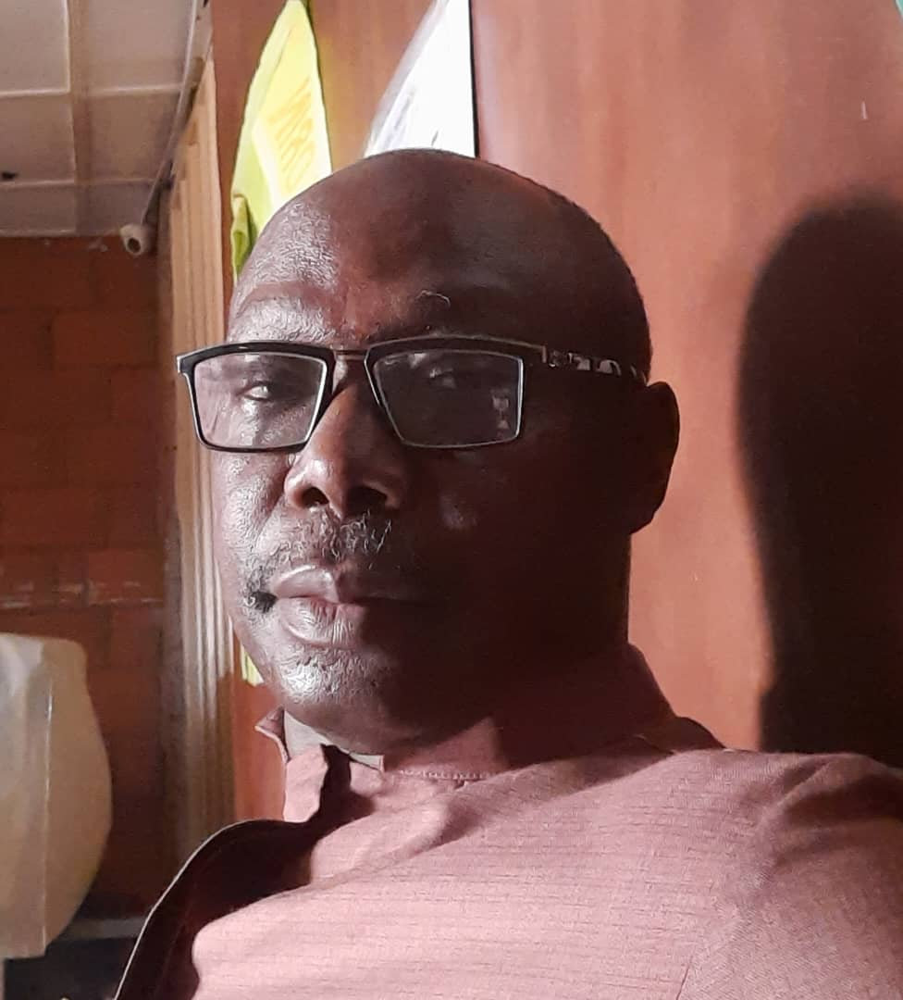

Dr Charles Bekibele
Director
Professor Charles BEKIBELE, MBBS, MSc, FMCOph, FWACS, MD.
Bekibele, Charles Obu is a Professor of Ophthalmology.
He graduated MBBS 1987, University of Ibadan, MSc (CEH) University of London 2009.
Cataract / anterior segment diseases of the eye and Low vision rehabilitation.
Research interests include ophthalmic epidemiology and blindness prevention.
English, Urhobo
Dr Izuka Okwudishu
MBBS, FWACS, FMCOph. Consultant Ophthalmologist

Dr Izuka Okwudishu, MBBS, FWACS, FMCOph. Consultant Ophthalmologist
Dr Izuka obtained Fellowship of both the National Postgraduate Medical College and West African College of surgeons in 2015.
Anterior segment eye diseases, including cornea and cataract, dry eye and low vision rehabilitation.
Catholic Eye Clinic Ago-Iwoye 2015-2018
Ancila Catholic Eye Hospital Agege-Lagos, 2018 to 2020.
University College Hospital, Ibadan. From 2020
English, Ibo, Yoruba